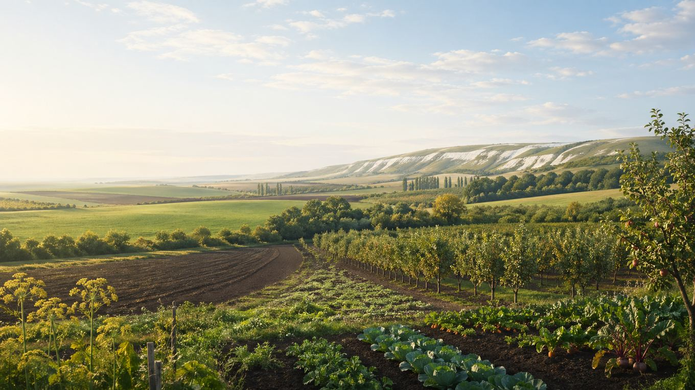

Главная / Белгородская область / южная степная зона

Белгородская область · южная степная зона
Что посадить в южной степной зоне
Южная степная часть области теплее и суше: здесь лучше раскрываются теплолюбивые культуры, бахча и открытые солнечные посадки, но отдельные овощи и ягодники сильнее зависят от полива и защиты от засухи.
Культуры и рекомендации
По умолчанию культуры отсортированы по надёжности: сначала надёжные, затем рекомендованные, с укрытием и рискованные. Сроки посадки ориентировочные: их стоит уточнять по погоде конкретного сезона.
| Культура | Категория | Рекомендация | Где лучше | Сроки | Комментарий |
|---|---|---|---|---|---|
| Вишняплодовое дерево | Плодовые | Надежно | Сад | Саженцы: апрель или сентябрь. | Стабильно растёт и плодоносит при обычном уходе. |
| Грушаплодовое дерево | Плодовые | Надежно | Сад | Саженцы: апрель или сентябрь–октябрь. | Хорошо показывает себя в южной зоне при выборе устойчивых сортов и нормальной формировке. |
| Кабачоктыквенная культура | Овощи | Надежно | Открытый грунт | Посев / высадка: конец мая — начало июня. | Одна из самых лёгких культур для южной зоны. |
| Лук репчатыйовощная культура | Овощи | Надежно | Открытый грунт | Севок: апрель–май. | Стабильная культура для степной части области при обычном уходе. |
| Свёкла столоваякорнеплод | Овощи | Надежно | Открытый грунт | Посев: май, по прогретой почве. | На солнечных грядках и плодородной почве показывает уверенный результат. |
| Сливаплодовое дерево | Плодовые | Надежно | Сад | Саженцы: апрель или сентябрь. | Стабильно удаётся в южной зоне при правильном подборе сорта. |
| Томатовощная культура | Овощи | Надежно | Открытый грунт, на солнечной гряде | Рассада: март; высадка: май. | В тёплой южной зоне часто прекрасно удаётся и в открытом грунте. |
| Тыкватыквенная культура | Овощи | Надежно | Открытый грунт | Посев / высадка: конец мая — начало июня. | Любит тепло и простор, поэтому южная зона ей подходит очень хорошо. |
| Чесноковощная культура | Овощи | Надежно | Открытый грунт | Озимый: сентябрь–октябрь; яровой: апрель. | Озимый чеснок остаётся одной из самых надёжных культур и в южной части области. |
| Абрикосплодовое дерево | Плодовые | Рекомендовано | Сад, южный склон или тёплое место | Саженцы: апрель или сентябрь; защита цветения от возвратных заморозков. | В южной зоне удаётся лучше, чем на севере области, но место должно быть тёплым и без застоя холодного воздуха. |
| Арбузбахчевая культура | Овощи | Рекомендовано | Открытый грунт на тёплой гряде | Рассада: апрель; высадка: конец мая — начало июня. | Для южной степной части области это уже вполне рабочая культура, особенно на солнечных участках. |
| Баклажантеплолюбивый овощ | Овощи | Рекомендовано | Тёплая гряда, на старте — под лёгким укрытием | Рассада: февраль–март; высадка: май. | В тёплое лето часто удаётся и без теплицы, но укрытие в начале сезона помогает старту. |
| Виноградягодная / плодовая культура | Плодовые | Рекомендовано | Сад, солнечная шпалера | Посадка: апрель–май; обрезка и укрытие — осень. | Одна из самых перспективных культур южной зоны, особенно на хорошо освещённых местах. |
| Гороховощная бобовая культура | Овощи | Рекомендовано | Открытый грунт | Посев: как можно раньше весной. | Лучше сеять ранним сроком, чтобы основное развитие прошло до сильной жары. |
| Дынябахчевая культура | Овощи | Рекомендовано | Открытый грунт на солнечной гряде | Рассада: апрель; высадка: конец мая — начало июня. | На тёплых участках юга области может удаваться очень достойно, особенно при мульчировании. |
| Земляника садоваяягодная культура | Ягоды | Рекомендовано | Грядка, лучше с мульчей | Посадка: апрель–май или август–сентябрь. | Даёт хороший урожай, но в жаркие периоды нуждается в регулярном поливе. |
| Капуста белокочаннаяовощная культура | Овощи | Рекомендовано | Открытый грунт с обязательным поливом | Рассада: март–апрель; высадка: апрель–май. | Удаётся нормально, но в сухое лето сильнее зависит от полива, чем в северной зоне. |
| Картофелькорнеплод / клубнеплод | Овощи | Рекомендовано | Открытый грунт | Посадка: апрель. | Растёт хорошо, но в жаркое и сухое лето без влаги урожай сильнее проседает. |
| Морковькорнеплод | Овощи | Рекомендовано | Открытый грунт | Посев: апрель–май. | Даёт хороший результат на лёгких почвах, но в жару важно не допускать пересыхания гряд. |
| Огурецовощная культура | Овощи | Рекомендовано | Открытый грунт, с поливом | Посев / высадка: май–июнь. | Урожай стабилен при тёплой погоде, но без полива быстро сдаёт в жару. |
| Перец сладкийтеплолюбивый овощ | Овощи | Рекомендовано | Тёплая гряда, возможен открытый грунт | Рассада: февраль–март; высадка: май. | Чувствует себя лучше, чем в более прохладных частях области, особенно в тёплые годы. |
| Малинаягодный кустарник | Ягоды | С укрытием / уходом | Сад, лучше с притенением и поливом | Посадка: апрель или сентябрь. | В южной зоне хуже переносит жару и пересыхание почвы, поэтому требует больше ухода. |
| Смородина чёрнаяягодный кустарник | Ягоды | С укрытием / уходом | Сад, лучше с влагой и лёгким притенением | Посадка: апрель или сентябрь. | В жаркой степной части области нуждается в более внимательном уходе и поливе. |
| Персикплодовое дерево | Плодовые | Рискованно | Самое тёплое и защищённое место | Саженцы: весна; обязательна защита штамба и наблюдение после зимы. | Как эксперимент возможен, но культура всё ещё остаётся рискованной из-за зимних повреждений и весенних сюрпризов. |
По текущим фильтрам ничего не найдено. Попробуйте изменить запрос или сбросить фильтры.